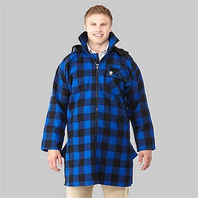
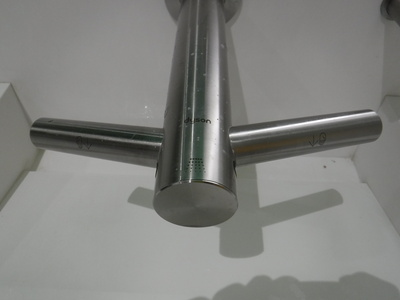

釣行日誌 ＮＺ編 「一期一会の旅：A Sentimental Journey」
さよなら、ニュージーランド
12/05(WED)
目覚まし時計が３時きっかりに鳴り出し、スパッとベッドから起きあがる。服を着替え、パジャマをバックパックに入れ、夫妻を起こさないように静かに洗面所に行って顔を洗う。客間から重いバックパックを担ぎ出し、これまた静かに玄関のドアを開けて車のトランクに入れる。戻ってデイパックとドライビンググラブを手に取り、忘れ物が無いことを確認してから家を出る。夜の闇の中、一礼してカローラに乗り込み、農道から地方道へ向かう。ここからだとステートハイウェイ１号線に出るにはしばらくワイカト川西岸の国道を走った方が早いので、そちらにハンドルを切る。帰国便のオークランド発は 09:50 AM なので、こんなに早く出なくても十分間に合うのだろうが、大林家に帰る途中で迷ったりしたこともあり、パンクや事故など不測の事態も起きないとは限らないので時間に余裕を持って出発した。
さすがにこの時間では交通量も少なく、深夜放送のFMを聴きながら快調に走る。ニュージーランドではメジャーらしいFM局：The Breeze から流れてくるのは、僕らの世代にも懐かしい曲ばかりで嬉しくなる。車を借りた時からこの局がチューンされていたので、ずっとここばかり聞き続けてきたのであった。
昨夜の常用薬がまだ残っているのか、まだ少し頭がしゃっきりしない感じがするので、気を付けてスピードを出しすぎないように注意して運転する。
やがてSH1のジャンクションに出て、広い高速道路に乗った。あとはオークランド空港へまっしぐらである。北上してオークランドに近づくにつれ交通量が増え、空港に近づくとなかなか道路上はにぎやかくなってきた。空港への案内標識はしっかり整備してあるので迷わずに空港最寄りのガソリンスタンドまでたどり着いた。セルフ方式で満タンにして、レジで支払う。そこからレンタカー会社の駐車場ビルは目と鼻の先なのだが、プリントアウトした地図を見ながらでも、あたりが暗いとやはり道が判らなくなった。少しぐるりと回ったらビルの入り口が見つかってハーツ・レンタカーの表示のスペースに赤いカローラハッチバックを停めた。朝の５時半過ぎだった。しばらく車中で休み、レンタカー店の中に人影が見えたので、近くにあったトロリーを持ってきて、地図や手袋を入れたデイパックとバックパックを載せ、店に向かう。こんな早朝からの勤務では大変ですねと挨拶をして、キーを返す。車をチェックすることもなく、これで良いですよ、と言われたので領収書をもらって店を出る。
ゴロゴロと重いトロリーを押しながら国際線ターミナルを目指す。早朝から空港はにぎやかく、NZ航空の自動応答マシンでチェックインを済ませ、バックパックを預ける。ところが無人の荷物受付機に載せると「この荷物は規格外ですので受け付けカウンターまで行ってください」とメッセージが出た。こりゃサイズがオーバーしたかな？と追加料金の不安に怯えつつ、係員の居るカウンターへ運んでいくと、こちらでも検査台の上に載せて自動で重量・サイズが測られたのち、無事OKが出た。やれやれ一安心である。あとはやることもないので搭乗前検査に向かう。長い列について順番を待ち、探知機をくぐる。ボディには問題無かったが、またしてもデイパックが引っかかった。レーンの後端にある検査台に連れて行かれ、中身のチェックが始まる。ベストに入っているフォーセップがまずかったかなと思って女性係官に見せると、それではないと言う。さらにベストのポケットをまさぐっていた彼女は赤いスイスアーミーナイフを取り出した。
「うわ！ヤバい！釣りの後でバックパックに戻すのを忘れてた！」
係官は冷静にナイフの刃を起こし、ブースに貼ってあるメジャーで測ると、
「これならOKよ。」
と言った。ああ、没収されなくて良かった。再び雑多な釣り小物一式をベストに仕舞い、デイパックに詰める。これで無罪放免だ。
有り余る時間を待ち潰すため、搭乗ゲートに至る途中にある各種スーベニアショップを見て回る。見事な色使いと柔らかな風合いの高級セーターは素晴らしかったが、さすがにお値段も素晴らしい。また、ニュージーランドの牧場で働く人たちやアウトドアマンには定番となっている老舗「スワンドライ」の分厚いウールジャケットやブッシュシャツなどもあったが、こちらも良い値段が付いていて、とても手が出なかった。

ロビーに出てみると、修学旅行だろうか、日本に帰るらしい高校生の団体さんが大勢いて、かしましくおしゃべりを楽しんでいた。しばらくしてからトイレに行ったら、洗面所の蛇口が見慣れない三つ叉形状をしている。中央から水が出て手を洗い終わると、今度は両脇の２本から温風が出て手を乾かしてくれる仕組みである。ほほぅ！これは良く出来ている！と思ってよく見ると、かの有名なダイソンのDyson Airblade Wash+Dryという製品であった。

これなら洗面台のシンクから温風乾燥機まで移動する間に水滴が床に垂れなくて掃除が楽になるだろう。全然畑違いだが、昔は土木工学という分野で設計をしていた身からすると、素晴らしい工業デザイン製品を見ると、心が躍り、癒やされる。南島で泊まったロッジの洗面所にあった不細工なシンクが思い出されて可笑しかった。
やがて搭乗時刻となり、学生さん達の後を付いて機内に乗り込む。今度は通路側の席だったので安心してデイパックからスリッパと空気枕を出し、シートに座る。ディスプレイからまたもアクション映画のリストを見ていると、懐かしの傑作パニック映画「ジョーズ：1975年」があったので、字幕にセットして見始める。コンピューターグラフィックスの無い時代によくあれだけのアクションが撮れたものだと感心する。この映画が大ヒットしてマスコミで大騒ぎ！になった当時、僕は中学１年生で、映画を見ることは出来なかったが、ピーター・ベンチリーの原作本や劇画になったコミック本を買い込んで夢中で読んだものである。ロイ・シャイダーをはじめとする出演者たちの演技も見事だが、さすがにスティーヴン・スピルバーグ監督の手腕の冴えに感激して見入ってしまった。助演のリチャード・ドレイファスも当然のことながらまだ若くて感慨深かった。帰国後、ネットで調べて「陽のあたる教室：Mr. Holland's Opus：1995年」も見たが、こちらも傑作であった。
朝食が配られ、例によってオレンジジュースを頼んだが、さすがにスーパーの格安大瓶ペットボトルのものとはひと味違い、美味しかった。
さすがに10時間あまりの長距離航路はトシをくった体に堪え、何度もシートの中で身をよじりながらうたた寝をする。ようやく成田国際空港に向けてボーイングが高度を下げ始め、夕方５時過ぎに無事滑走路に降り立った。再び長い地下通路を動く歩道に乗って移動し、バゲージクレームで高校生達に混じってバックパックを受け取る。
税関の応対をしてくれた若い男性係官は、ロッドケースを見ると
「釣りですか？」
と訊ねてきたので、
「ええ、ニュージーランドまで。大きな鱒が釣れますよ。お好きなら１度は行かれることをお勧めしますよ。」
と答えると、ではもうよろしいですよ、と荷物を開けることもなくあっけなく無罪放免となった。初めてのNZ釣行だった1997年には、帰国後、小牧の空港で税関の係官にあきれるほど長時間のチェックを受けたことがあったのでいささか拍子抜けだった。
到着ロビーに出て、宅配便の窓口に行き、かさばって重いバックパックを自宅まで送る。身軽になって公衆電話を探し、帰国の連絡とジョー・ハーマン夫人の様子をお伝えしようと、横浜の植田紗加栄さんの携帯に電話する。出られなかったので自宅の固定電話にもかけるが繋がらない。今夜は留守かなと、あきらめて地下のJR駅に行き、東京駅までの列車の切符を買う。自動券売機の入力画面が判りやすく、目的地、出発予定時間などをインプットすると楽々とチケットが購入できた。ホームで少し待つと成田エクスプレスが来たので乗り込む。車内の広告に「オニツカタイガー」を履いたモデルさんの写真が出ており、えらいまた懐かしいブランドだなぁ....今でも売っているのかなぁ？などと訝しんだ。後日調べてみると、東南アジアを中心として海外で人気あるスニーカーブランドだとのこと。鬼塚印の運動靴を履いていたヒトにとっては、ここでも隔世の感があった。
東京駅では地下深くのホームに着いたので、長いエスカレーターに乗り、表示を頼りに東海道新幹線のホームを目指す。まぁ何と言っても日本の駅なので迷わずにたどり着いた。やがてこだま号が来て乗り込み、ぐったりとシートに沈む。始発駅なので自由席の切符でも楽に座れた。
やがて走り出したこだま号が横浜駅に停まった時、車窓から夜の町並みを眺め、闘病中の植田さんの容態を思った。
各駅にのんびりと停車しつつようやく豊橋まで着き、タクシーを拾って自宅に着いたのは夜10時半を過ぎていた。
『ああ....何とか無事に帰ってこれた。』
大きく安堵のため息をつき、冬用のパジャマに着替え、慣れた自分のベッドに深々と溶け落ちた。
釣行日誌ＮＺ編 目次へ
サイトマップ
ホームへ
お問い合わせ